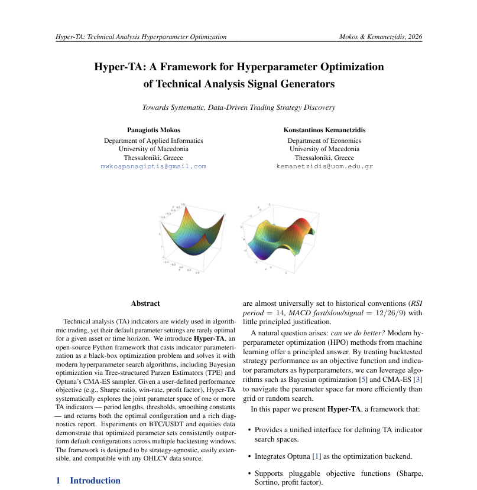
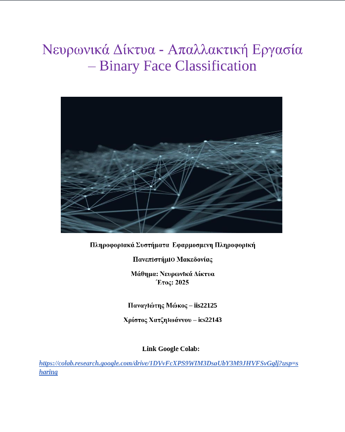
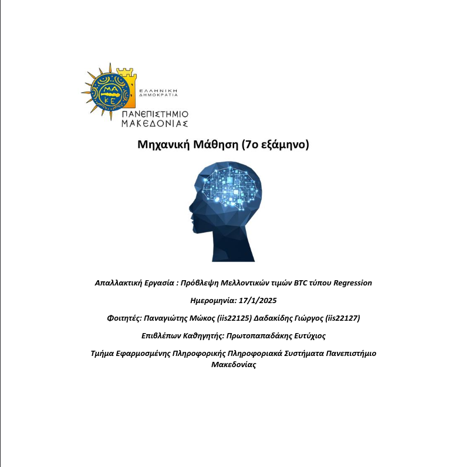
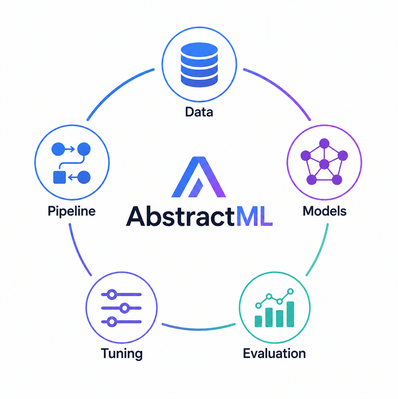
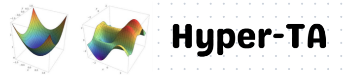

|
Mwkos Panagiotis B.Sc. Post Graduate in Applied Informatics (Computer Science) from the University of Macedonia (UoM), specializing in Machine Learning, Neural Networks, Computer Vision, and Applied Mathematics. Experienced in end-to-end deep learning pipelines, hyper- parameter optimization (HPO), real-time data engineering, and quantitative time-series analysis (Monte Carlo simulations, statistical risk modeling). Developer of modular open- source ML/data Frameworks/Libraries & Research Frameworks in Python. Currently seeking an M.Sc. in Machine Learning/Computer Vision, with the long-term goal of pursuing Ph.D. research in Computer Vision and 3D Neural Scene Reconstruction. Passionate and big advocate of open-source software and open science in machine learning, committed to developing & contributing to reproducible ML research/Papers, open-source frame- works & libraries. Previosuly worked at Telekom - Cosmote Email / CV / Scholar / Github / Kaggle / Huggingface / LinkedIn / Twitter / |

ResearchI'm interested in computer vision, deep learning, generative AI, Quantitative Analysis and image processing. Also interested in inferring the physical world (shape, motion, color, light, etc) from images. |
|
 |
Hyper-TA: Technical Analysis Signal Generator & Hyperparameter Optimization Framework
Panagiotis Mokos, Konstantinos Kemanetzidis Python Framework/Library Whitepaper, 2026 Paper / Code A Complete Technical Analysis Toolkit, Signal Generator & Hyperparameter Optimization Framework that maximizes a user-defined objective/s using predefined Search Algorithms |

|
Mining Intelligence: Towards Decentralized, Permissionless AI
Panagiotis Mokos BSc Thesis, University of Macedonia (BSc Applied Informatics), 2026 Supervisors: Eftychios Protopapadakis, Emmanouil Stiakakis Paper / Code Researched NLP methods & Datasets to contsruct a AI text Detection Classifier Models across search spaces. Analyzed Bittensor's Dynamic Architecture for Producing & Commoditizing Intelligence . |
|
 |
Neural Networks for for Binary Classification: Deepfake Detection & Anomaly Detection
Panagiotis Mokos, Christos Xatziantoniou Thesis, University of Macedonia (BSc Applied Informatics), 2026 Supervisor:Eftychios Protopapadakis Paper / Repo Binary Image Classification of Faces using Neural Networks. Analyzed the effects of different Neural Network (CNNs & Transfer Learning) architectures on the performance of the model. |
|
 |
Timeseries Regression & Mathematical Modeling Analysis
Panagiotis Mokos, Giorgos Dadakidis Thesis, University of Macedonia (BSc Applied Informatics), 2026 Supervisor:Eftychios Protopapadakis Paper / Repo Timeseries Regression & Mathematical Modeling Analysis of Bitcoin using a wide variety of Features and Inputs. |
ProjectsSelection of some of my open-source frameworks, data engineering libraries, machine learning models, and full-stack applications. |
|
 |
AbstractML
Panagiotis Mokos code A small, abstracted ML toolkit to make it easy to perform ML tasks — data, models, evaluation, tuning, and pipelines in one unified interface. |
|
 |
Hyper-TA
Panagiotis Mokos Repo / Paper Technical Analysis Signal Generator & Hyperparameter Optimization Framework/Library. |

|
Finpipe
Panagiotis Mokos code Python API library that collects and aggregates market data from multiple fragmented providers into a single unified interface. |
|
|
Unipmx
Panagiotis Mokos code Unified prediction markets Python API library providing a single interface across Polymarket, Kalshi, Limitless, and other venues. |
|
|
YTmation
Panagiotis Mokos code YouTube automation framework for repetitive video tasks (cut, edit, caption). AI-agent-first — plug in your own models to generate videos and animations on the fly. |

|
Fuel Station Website
Panagiotis Mokos code Data analysis and processing of fuel station data. Fully responsive full-stack website for business operations. |
|
This website is based on template at Here. |